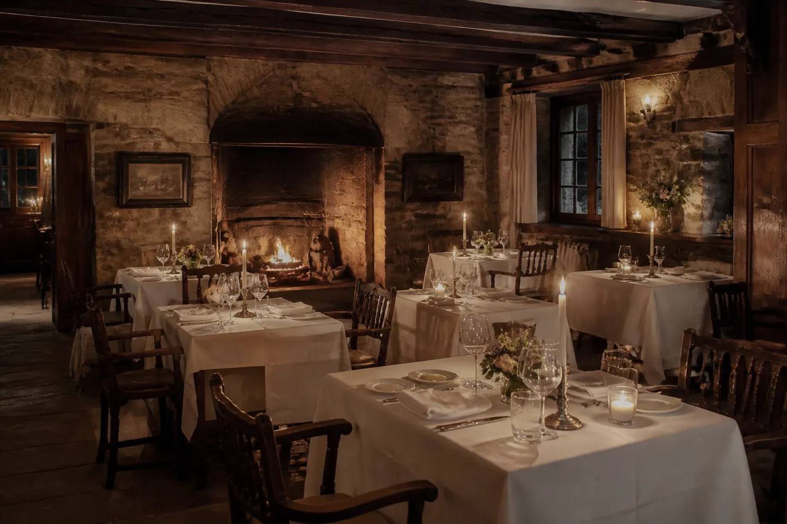

The plates people already order.
Francis Kaufman House
Francis Kaufman House is the name on the site.
We're Francis Kaufman House in Montgomery County.
The plates people already order.
A room you can sit in.
Takeout when you want the same food at home.
Francis Kaufman House is still the name on the door.Francis Kaufman House
The work is the list they already publish.Francis Kaufman House
Call if the page left a question.Francis Kaufman House
Francis Kaufman House is the name on the site.
Call or walk in and say what you need.
The plate is the visit. Come hungry.
You leave fed.
Ask when you get there. They already answer this on the phone.
Ask when you get there. They already answer this on the phone.
Ask when you get there. They already answer this on the phone.
Based in Montgomery County.
Directions sit under Visit.
Directions sit under Visit.

Francis.
Francis Kaufman House in Montgomery County.
Prospect demo. noindex. Copy mirrored from https://www.franciskaufmanhouse.com/ on 2026-08-16. No clean logo on the homepage, so the mark stays type. Portrait is generated atmosphere for the trade, not their photography.